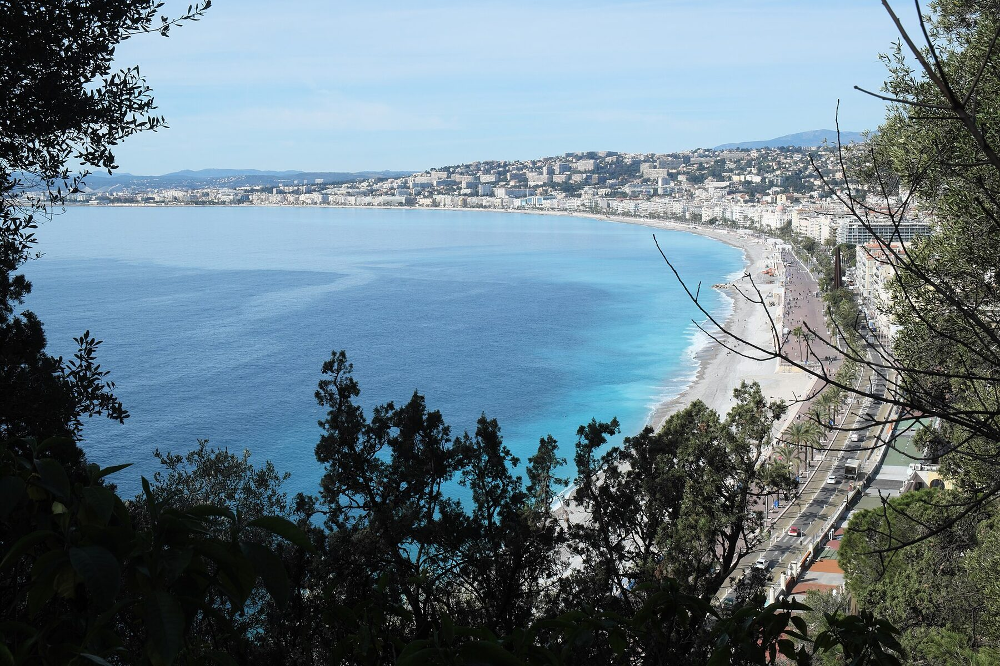

Vous arrivez à Nice pour quelques mois. Un stage, une formation, une mutation, une mission. Le bail mobilité a été créé pour ce cas précis.
Ce guide explique comment il fonctionne, qui peut le signer et ce qu'il faut préparer. Il s'appuie sur la loi et sur l'exemple d'un appartement meublé de 77,51 m² sur les collines de Bellet, à l'ouest de Nice.
01Qu'est-ce qu'un bail mobilité ?
Le bail mobilité est un contrat de location d'un logement meublé, conclu pour 1 à 10 mois. Il a été créé par la loi ELAN du 23 novembre 2018. Il est encadré par les articles 25-12 et suivants de la loi n° 89-462 du 6 juillet 1989.
Il porte sur un logement meublé, au sens de l'article 25-4 de la même loi, loué à une personne en mobilité. Il s'adresse à une personne qui vient à Nice pour une raison précise et pour un temps limité.
02Combien de temps dure un bail mobilité ?
Il dure de 1 à 10 mois. La durée est fixée à la signature.
Il n'est ni renouvelable ni reconductible. À la fin du bail, le contrat s'arrête. Si vous restez plus longtemps, un nouveau contrat est nécessaire, sous un autre régime.
La durée peut être modifiée une fois par avenant, sans dépasser 10 mois au total.
Aux Piafs des Collines, la durée minimale est de 1 mois.
03Qui peut louer en bail mobilité à Nice ?
Le locataire doit justifier, à la date de prise d'effet du bail, d'un de ces motifs :
- une formation professionnelle ;
- des études supérieures ;
- un contrat d'apprentissage ;
- un stage ;
- un engagement volontaire dans le cadre d'un service civique ;
- une mutation professionnelle ;
- une mission temporaire dans le cadre de son activité professionnelle.
Un interne en médecine, un médecin en formation, un cadre envoyé en mission, un salarié muté ou un stagiaire entrent dans cette liste.
04Quelles pièces fournir avant de signer ?
Le justificatif du motif est demandé avant la signature. Selon votre cas :
- une convention de stage ;
- une attestation d'inscription ou d'affectation ;
- un contrat de mission ou une lettre de mutation ;
- un ordre de mission.
S'y ajoutent les pièces habituelles d'un dossier locatif : une pièce d'identité et la garantie choisie.
Le contrat mentionne le motif de mobilité. Il précise aussi que le bailleur ne peut pas exiger de dépôt de garantie.

_Baie_des_Anges_773.jpg){kind=link}
05Faut-il un dépôt de garantie ?
Non. Le bailleur ne peut pas demander de dépôt de garantie dans un bail mobilité. C'est la loi qui l'interdit (article 25-17).
Vous n'avancez donc pas de somme bloquée à l'entrée.
06La garantie Visale est-elle possible ?
Visale est une garantie gratuite d'Action Logement. Elle n'est accordée que si le loyer, charges comprises, reste sous un plafond fixé par Action Logement.
Au niveau de loyer de cet appartement, Visale n'est pas mobilisable. La garantie prend la forme d'une caution de l'employeur ou d'une caution personnelle.
07L'employeur peut-il louer à son nom ?
Oui. Quand une société, une agence de relocation, un assureur ou une production paie le logement, le bail se fait au nom de la structure.
C'est alors un bail régi par le code civil, distinct du bail mobilité : la loi du 6 juillet 1989 protège la résidence principale d'une personne, et une société n'en a pas. Il fonctionne ainsi aux Piafs des Collines :
- à partir de 3 mois ;
- facture au nom de la structure ;
- aucun justificatif de motif demandé.
C'est la voie prévue pour une entreprise qui loge un collaborateur. Le service achats reçoit une facture unique, à son nom.
08Que comprend le loyer ?
Dans un bail mobilité, le loyer est fixé au contrat dans le cadre des articles 17 et 18 de la loi du 6 juillet 1989, et les charges sont réglées par un forfait fixé au contrat, sans régularisation ultérieure (article 25-18). Aux Piafs des Collines, le prix mensuel comprend :
- charges et énergie, électricité, eau, chauffage et climatisation ;
- fibre ;
- une place de parking privée dans l'enceinte ;
- linge de lit et de toilette fourni à l'arrivée ;
- ménage de sortie.
Le locataire ne reçoit aucune facture d'énergie. Cette location meublée d'habitation, sans prestation para-hôtelière, est exonérée de TVA (article 261 D, 4° du code général des impôts) : le montant affiché est le montant payé, sans TVA ajoutée ni récupérable. L'assurance habitation reste à la charge du locataire.
09Combien coûte un bail mobilité à Nice ?
Les prix varient selon la durée. Pour l'appartement des Piafs des Collines, par mois, charges comprises :
| Durée | Prix par mois |
|---|---|
| 1 à 2 mois | 3 600 € |
| 3 à 6 mois | 3 200 € |
| 7 à 10 mois | 2 880 € |
Sur 7 à 10 mois, le mois revient 720 € moins cher que sur 1 à 2 mois.
10Comment résilier un bail mobilité ?
Le locataire peut quitter le logement avant la fin du bail. Il donne un préavis d'un mois, par lettre recommandée avec accusé de réception, par acte de commissaire de justice ou par remise en main propre contre récépissé. Le bailleur, lui, ne donne pas congé : le bail prend fin à la date prévue au contrat, sauf résiliation prononcée par le juge en cas de manquement du locataire.
11À quoi ressemble le logement ?
Un appartement meublé de 77,51 m² au 1er étage d'une villa, 202 bis route de Bellet, 06200 Nice.
- 2 chambres de 13,91 et 12,88 m² ;
- 2 salles d'eau, dont 1 privative avec douche à l'italienne ;
- 1 WC indépendant ;
- 2 terrasses de 10,58 et 15,75 m², vue sur la Baie des Anges ;
- une véranda buanderie de 4,95 m² ;
- un parking fermé ;
- une piscine partagée, selon horaires ;
- pompe à chaleur et climatisation réversible, DPE C en énergie et A en climat.
L'arrivée est autonome : le code d'accès vous est communiqué avant la date d'entrée. L'état des lieux d'entrée et l'inventaire du mobilier sont établis contradictoirement avec vous à l'entrée dans les lieux.
12Où se trouve-t-il par rapport aux lieux de travail ?
En voiture, hors trafic :
- Clinique Kantys Centre : 12 min ;
- campus Valrose : 13 min ;
- CHU Pasteur 2 : 15 min ;
- Centre Antoine Lacassagne : 16 min ;
- aéroport : 20 min ;
- Monaco : 22 min ;
- Sophia Antipolis : 28 min ;
- la plage : 7 min.
Le bus 60 s'arrête à 50 m. Il rejoint le tram ligne 2 à Magnan.
13Préparer votre dossier
Notez votre date d'entrée et la durée. Indiquez qui paie le loyer : vous, votre employeur, une agence, un assureur ou une production. Préparez le justificatif de votre motif.
Avec ces trois éléments, vous recevez une réponse sur la disponibilité à la date d'entrée demandée.
Demander une disponibilité pour l'appartement des Piafs des Collines, en bail mobilité de 1 à 10 mois.